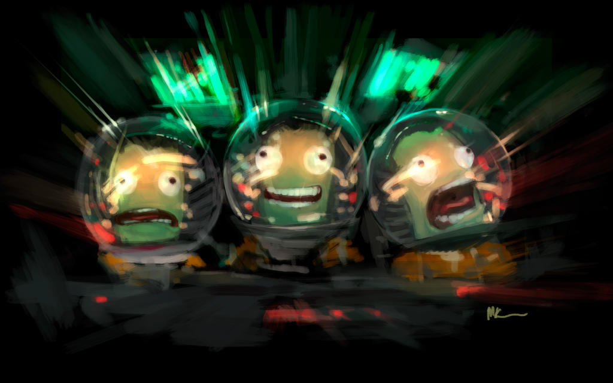

case

KSP powered descent guidance software with kRPC
MERCURYGLADE motion planning with ROS2 and gazebo
comma.ai dashcam optical flow with OpenCV
Kuzushiji recognition with machine learning
❮
❯
about me
I am thomas "case" cutler. I am an engineer and ethical hacker. I recently obtained my bachelors in aerospace engineering. the nickname case came from the 1984 novel neuromancer where the character is a "console cowboy" and a brilliant hacker.
you can find me on twitter @caserobotics, github caserobotics or email me caserobotics at protonmail dot com
my interest is robotics. I work on hardware, electronics, and software development mainly in the areas of locomotion, motion planning, and computer vision. I also occasionally work on astrodynamics and reverse engineering.
projects
present
- AZUREVIPER -- single-wheeled ~1600mm tall mobile robot for research into auto balancing, using arms for stability, and human-robot interactions
- DARKDYNAMO -- long-legged ~2000mm (maybe ~3000mm in the future) tall tripedal robot for research into 3D foot placement planning in rough terrain
- MERCURYGLADE -- quadrotor for fast and efficient trajectory planning simulated with ROS2 in gazebo
- SOLARNIGHT -- rapid tube-launched UAV deployment from a 6-UAV battery in a truckbed
- DARKPRINCE -- utiziling lighter than air or vertical propulsion for assisted locomotion
- EASTERNMAESTRO -- tunneling robot for long-distance tunneling using bio-inspired locomotion
- HAMMERHEAD -- KSP powered descent guidance software with kRPC, as an analog to the Masten Space ADAPT (Xombie) test flights
past
- KRILL -- circular restricted three body problem in python (variation of ZVC for different jacobi integral values, motion of bounded third body using RK4)
- I do want this to be a CR3BP research toolbox in C++ with python bindings at some point with full support for various libration point orbits, poincare map generation, etc. but I need to do more research into space manifold dynamics
- OLYMPUSFIRE -- subdomain recon script in bash
- C++ extended kalman filter for fusing noisy lidar and radar sensor measurements
- C++ kalman filter for state estimation of a noisy sinusoidal waveform
- MIT 6.828 operating systems in C and x86 asm
- least squares curve fitting with ceres and C++
- comma10k segnet labeling and PR checking/fixing for comma.ai openpilot training
- junior year rocket competition team avionics -- avionics design
- junior year UAV competition team avionics -- flight computer design
- junior year UAV group design project -- flying wing avionics and team lead
- sophomore year UAV competition team avionics -- camera system for reconnaissance
- sophomore year UAV group design project -- electronics development for UAV, system integration, and team lead
- discord bot in javascript
backburner
- VIOLETHALIDE -- humanoid robotics development
- PHANTOMCYCLOPS -- quadrotor with a 2DOF gimballed camera as a UAV hacking testbed, paired with EYEOFSAURON which is a laser attack platform for counter-UAV ops
- BARRACUDA -- medium fidelity low-thrust interplanetary trajectory design and optimization tool in C++ with python bindings
- SWORDFISH -- optimization engine in C++ as an alternative to SNOPT (since it isnt FOSS which is really annoying)
- NAUTILUS -- Earth-Mars analog mission analysis with Python flight software using kRPC in KSP
notes